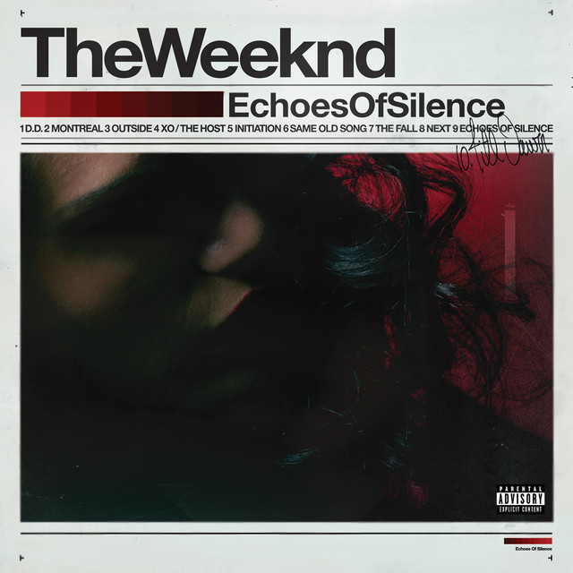
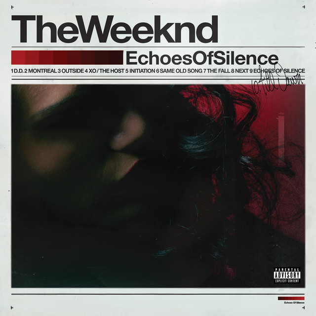

The Weeknd
House of Balloons, Thursday, Echo of Silence, These were the three discs that defined TheWeeknd and helped him get out of poverty. These discs were the renaissance of dark RnB with being heavily influenced by Michael Jackson the Weeknd showed different sides of music that took the world for shock.
 
